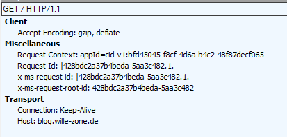

With the upcoming version (2.1) of the Application Insights package for ASP.NET Core all requests made with HttpClient (and probably other clients) will have addition request headers, contain correlation ids. This is part of the dependency tracking feature. These headers are Request-Context, Request-Id, x-ms-request-id and x-ms-request-root-id.

While this is usually not a problem, it might break functionality in some cases. For example in 2.1.0-beta2 it broke the request signature for Azure Storage requests. If you need (or want) to disable this feature there are several ways.
Disable per domain
If you want to disable the correlation id headers per domain use the following snippet in the Configure method of the startup class
var modules = app.ApplicationServices.GetServices<ITelemetryModule>();
var dependencyModule = modules.OfType<DependencyTrackingTelemetryModule>().FirstOrDefault();
if (dependencyModule != null)
{
var domains = dependencyModule.ExcludeComponentCorrelationHttpHeadersOnDomains;
domains.Add("blog.wille-zone.de");
}
This snippet will prevent that the correlation id headers are added to requests that are made to blog.wille-zone.de.
Disable correlation id headers completely
If you want to disable the correlation id headers completely, remove the original DependencyTrackingTelemetryModule from the ServiceCollection in the ConfigureService method of the startup class and add your own custom initialization.
var module = services.FirstOrDefault(t => t.ImplementationFactory?.GetType() == typeof(Func<IServiceProvider, DependencyTrackingTelemetryModule>));
if (module != null)
{
services.Remove(module);
services.AddSingleton<ITelemetryModule>(provider => new DependencyTrackingTelemetryModule() { SetComponentCorrelationHttpHeaders = false });
}
Disable dependency tracking
If you want to disable dependency tracking completely, just remove the DependencyTrackingTelemetryModule from the ServiceCollection in the ConfigureService method of the startup class.
var module = services.FirstOrDefault(t => t.ImplementationFactory?.GetType() == typeof(Func<IServiceProvider, DependencyTrackingTelemetryModule>));
if (module != null)
{
services.Remove(module);
}
A full example project with all three possible ways can be found at Github.